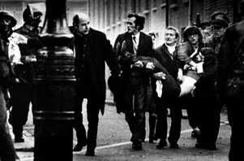

"View from the window, 12 Garvin Place, Rossville Flats, where six bullets were fired at photographer Fulvio Grimaldi as he was photographing events below."
Photograph by Fulvio Grimaldi, 1972.
On Monday, January 31, 1972 Signor Fulvio Grimaldi, an Italian journalist in Derry to report the march, described in a Radio Eireann interview what he saw:
"It was the most unbelievable . . . I have travelled many countries, I have seen many civil wars and revolutions and wars, I have never seen such a cold-blooded murder, organised, disciplined murder, planned murder."
He said: "I was in the front line of the march as the march approached the barricade erected by the military in William Street. There were a few exchanges, a few throws of stones, not very heavy, and afterwards, about three of four minutes, the army moved up with this water cannon and sprayed the whole crowd with coloured water. Then the crowd dispersed.
"Successively, it returned and threw some more stones: nothing as I have seen in other places in Northern Ireland, nothing really very heavy. After which gas was used massively by the army, and the crowd dispersed towards the meeting place, which was at Free Derry Corner. As the crowd was moving away, I would say about a couple of thousand people -- completely peaceful because they had been drenched with gas and they could hardly breathe, and many were sick -- suddenly in the area behind Free Derry Corner -- Rossville Flats, I think it is called, the big square in front of those flats -- the army, the paratroopers, moved in on Saracens.
"And other paratroopers followed on foot, and they jumped out. The people were thinking they would be given another dose of gas and scattered very hurriedly and they really fled towards Free Derry Corner. The Army jumped out and they started shooting in all directions. I took pictures of this, I took recordings of this, and there is no doubt whatsoever that there wasn't the slightest provocation.
"There hadn't been one shot fired at them. There hadn't been one nail bomb thrown at them. They jumped out and, with unbelievable murderous fury, shot into the fleeing crowd."
Signor Grimaldi was asked if at any stage before the paratroopers fired there might have been shots from the top of Rossville Flats. He replied "I am absolutely certain, and it is proved by the tape, which records the whole following of events. Absolutely no shot, no nail bomb even, nothing at all. That crowd was dispersing."
He was asked, in view of the fact that the army claimed that they had been shooting at snipers on top of the flats, whether he had seen any dead and wounded other than in the streets. He went on: "Let me tell you what I saw. Now, they were only in the street and in the squares. I saw a man and his son crossing the street, trying to get to safety, with their hands on their heads. They were shot dead. The man got shot dead. The son, I think, was dying.
"I saw a young fellow who had been wounded, crouching against the wall. He was shouting 'don't shoot, don't shoot'. A paratrooper approached and shot him about one yard. I saw a young boy of 15 protecting his girlfriend against the wall and then proceeding to try and rescue her by going out with a handkerchief and with the other hand on his hat. A paratrooper approached, shot him from about one yard into the stomach, and shot the girl in the arm.
"I saw a priest approaching a fallen boy in the middle of the square, trying to help him, give him the last rites perhaps, and the army -- I saw a paratrooper kneel down and take aim at him and shoot at him, and the priest just got away by laying flat on his belly. I saw a French colleague of mine who, shouting 'press, press' and raising high his arms, went into the middle to give help to a fallen person and I saw again paratroopers kneeling down and aiming at him, and it's only by a fantastic acrobatic jump that he did that he got away.
"I myself got shot at five times. I was at a certain stage shielding behind a window. I approached the window to take some pictures.Five bullets went immediately through the window, and I don't know how they missed."

Signor Grimaldi was asked what the mood of the people in the Bogside had been while this was going on. He said: "It was panic, it was sheer despair, it was frustration. I saw people crying, old men crying, young boys, who had lost their friends of 14, 13 and 15 years, crying and not understanding. There was astonishment. There was bewilderment, there was rage and frustration."
From a tape recording of snatches of conversation on British army radio during the shooting in Derry: ". . . Your mother's been killed by the Armee-e, Doo da, doo da" (voice singing). Static . . . "Return fire . . . Aim pistol lower regions . . . Roger, Wilco. Out." . . . Static . . . (sound of shot) . . . "Yoo-hoo! Well done! Keep it up." . . . "I said shoot for lower regions . . . the balls" . . . "Over" . . .
An intercepted letter to the commander of the 1st Battalion of the British Parachute Regiment, Lt Colonel Derek Wilford, was printed on the front page of the Sunday Press on the Sunday following the massacre in Derry. It comes from BRIGADIER FP BARCLAY, DSO, MCDL, Colonel, the Royal Norfolk Regiment and says:
Little Dunham Lodge Kings Lynn Norfolk
February 1, 1972
Dear Wilford
As an ex-parachute Brigade Commander I write to say how proud it made one feel to see the way, on TV, on which your lads went into action against those blighters last Sunday. They looked splendid and, as usual, bang on the ball.
It seems to me and many others that prompt retaliatory action such as this is long overdue. It will have, I've little doubt, a most salutary effect. Should have happened long since.
I sincerely trust you successfully weather these thoroughly unjustified but seemingly inevitable brickbats and recriminations emanating mostly from those who either have no sense of law and order, duty or perspective, or who are spineless.
With best wishes to you and yours
Sincerely Peter Barclay